What's New in Sapera LT 8.60
In this section
Z-Expert is here!
Here's a look at some of the new features in Sapera LT.
For more information about new features, go to the
Sapera LT website.
Note: Not all of the features mentioned here are included in every edition of Sapera.
Z-Expert
Sapera LT's Z-Expert supports the latest generation of Z-Trak 3D sensors. It replaces the CamExpertX application and includes new functionality for creating a Unified Measurement Space for multi-sensor configurations.
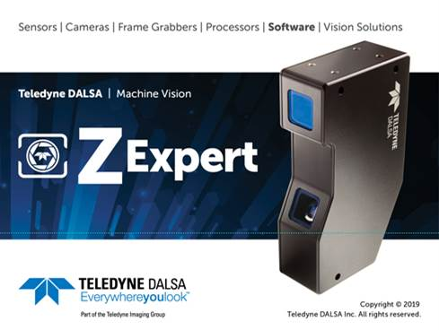
Check out these new Z-Trak 3D sensors here!
USB3 Vision Interface
Sapera LT 8.60 now includes the new USB3 Vision Interface for support of Teleyne Lumenera USB3 Vision cameras. The USB3 Vision Interface uses the GenICam standard for feature access: If you know GigE then you already know USB!
See what Teledyne Lumenera has to offer with its line of USB3 Vision cameras here!
Network Imaging Package
Sapera LT 8.60 includes an updated version of the Network Imaging Package.
This new version improves performance for Teledyne DALSA GigE Vision devices for faster, more robust applications.
What's New in Sapera LT 8.50
In this section
5GigE GigeVision is here!
Here's a look at some of the new features in Sapera LT.
For more information about new features, go to the
Sapera LT website.
Note: Not all of the features mentioned here are included in every edition of Sapera.
5GigE GigEVision Support
Sapera LT's Network Imaging Package now supports the latest generation of 5-Gigabit ethernet GigEVision Genie Nano cameras. One word: Faster, faster, faster!
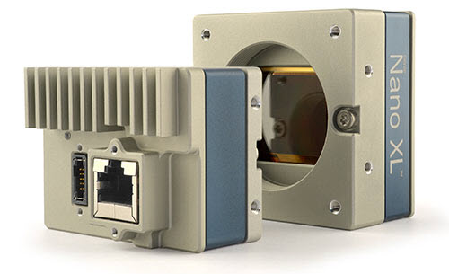
Check out these new Genie Nano-5GigE cameras here!
Feature setting recording/playback
Feature setting changes can now be recorded to a file and reloaded anytime to reconfigure devices with feature setting changes.
This can be done right in CamExpert: Just a click and start recording the feature settings changes!
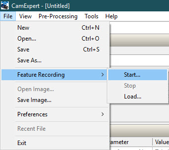CamExpert Focus Quality
CamExpert now features a Focus Quality tool that allows you to monitor the image focus quality in real-time, helping you to find the optimal lens settings. That's sharp!
Simply click the Focus Quality command in the View menu to display the value in the Display panel status bar.
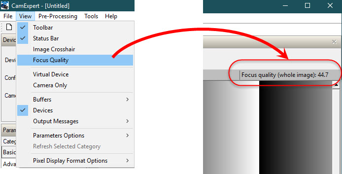Shaft Encoder Averaging Engine
Sapera LT now includes a shaft encoder averaging engine (for supported Teledyne DALSA frame grabbers) that eliminates erratic triggers beyond what normal jitter control can provide. Now that's smooth!
Note to developers: Available through the SetParameter functions of the SapAcquisition classes.
New 3D Example Program
A new example program is available for 3D sensors, such as the Z-Trak, that shows how to get profile and range X, Z and reflectance values in real-world coordinates:
- GrabConsole3DWorld
Demos and example solutions are available for Microsoft Visual Studio 2010/2012/2013/2015/2017.
What's New in Sapera LT 8.40
In this section
New features, more support.
Here's a look at some of the new features in Sapera LT.
For more information about new features, go to the
Sapera LT website.
Note: Not all of the features mentioned here are included in every edition of Sapera.
Next-Generation CamExpert X for Configuring 3D Sensors
The latest version of Sapera LT includes the all-new CamExpertX application for configuring Teledyne DALSA 3D sensors, such as the Z-Trak. Built on a completely new platform than the original CamExpert.
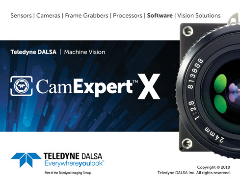
What's more, CamExpertX includes new display capabilities for rendering 3D images.
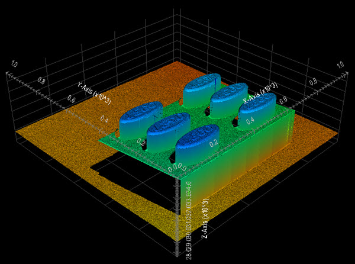
Currently CamExpert supports 3D sensors only; future releases aim to integrate all of the original CamExpert functionality into this new version as part of the evolutionary roadmap of CamExpertX.
3D Buffers
Based on the GenICam standard, 4 new Sapera buffer formats have been added to support 3D devices.
New formats provide buffers with 16-bit channels for height (Z or C), width (X or A), and reflectance (R) values generated by 3D acquisition devices, such as the Teledyne DAlSA Z-Trak laser line profiler.
Note to developers: Sapera LT adds support in the SapBuffer class for these 3D formats.
3D Example Programs
Two new console example programs are available to demonstrate how to grab images and load and display 3D image files:
- GrabConsole3D
- FileLoadConsole3D
Support for Microsoft Visual Studio 2017
Sapera LT 8.40 supports Microsoft Visual Studio 2017, allowing you to use the latest version of your favorite development software, with all the best new features to help speed your application development.
Demos and example solutions are available for Microsoft Visual Studio 2010/2012/2013/2015/2017.
Additions in Sapera LT 8.30
- GigE-Vision driver updated with NDIS 6.20 (Network Driver Interface Specification)
- Sapera LT installation for Full SDK Wow64
- Support for 4-plane monochrome formats
- Added dynamic behavior to FindCamera console example
- Support for Borland 32-bit Clang-based compiler
- Improved support for Xtium CLHS and CXP frame grabbers
Updated GigE-Vision Driver
GigE-Vision driver updated with NDIS 6.20 (Network Driver Interface Specification), which represents a major revision providing support improved support for Windows 7 and Windows 10.
Full Wow64 Sapera LT Installation
The Full Wow64 Sapera LT Installation allows development of 32-bit applications on Windows 64-bit platforms. Previously only CamExpert and runtime versions of Sapera LT were available with Wow64 support.
4 Plane Monochrome Buffers
Sapera LT now supports 8 and 16-bit 4 plane monochrome buffers. This allows acquisition from devices that create 4 different images simultaneously, such as with sensors with individual filters for different spectral responses.
Note to developers: Sapera LT adds support in the SapBuffer class for these new monochrome planar formats.
Improved FindCamera Example
The FindCamera example now dynamically follows the connection and disconnection of GigE-Vision, CLHS, and CXP cameras.
Additions to Sapera LT 8.20
- Frame rate calculations now available in the Sapera API
- Support for planar monochrome buffer formats (2-plane, 3-plane, 8-bit and 16-bit)
- Support for 4x3 color calibration coefficients in the Sapera API, CamExpert
- Support for Micosoft Visual Studio 2015
- Support for Borland C++ Builder 64-bit compiler
- Windows XP no longer supported
Frame rate calculations now available in the Sapera API
The latest version of Sapera LT includes new functions for frame rate calculations using buffer timestamps. Available statistics also include the minimum and maximum time between frames. In cases where images are triggered using a non-temporal timebase (for example, shaft encoder ticks), the frame rate is calculated using performance timers.
Note to developers: The new frame rate functions are part of the new XferFrameRateInfo class, which is automatically created during construction of a SapTransfer object. The SapTransfer class also includes two new functions for updating and getting frame rate statistics.
Monochrome Planar Buffers
Need to grab 2 or 3 images simultaneously with filters outside of traditional RGB to extract unique information from the scene? Monochrome planar buffers are the answer, for cameras with 2 or 3 independent line sensors with individual filters for different spectral responses for each line.
Note to developers: Sapera LT adds support in the SapBuffer class for these new monochrome planar formats.
Frame Grabber Color Calibration
Teledyne Xtium CLHS frame grabbers hardware-based image filters now support 4x3 color calibration coefficient matrices for on-board color correction processing. Use the Sapera Color Calibration tool to perform color calibration with you acquisition setup and upload these coefficients to the hardware.
Note to developers: Sapera LT has added support for color calibration coefficients using the image filter functions in the SapAcquisition class. The SapBuffer Load function also now supports loading color calibration coefficient files (*.ccor).
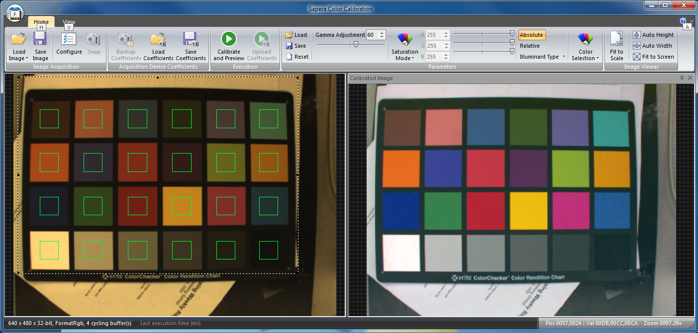Support for Microsoft Visual Studio 2015
Sapera LT 8.20 supports Microsoft Visual Studio 2015, allowing you to use the latest version of your favorite development software, with all the best new features to help speed your application development.
Support for C++ Builder 64-bit compliler
Sapera LT 8.20 now supports the C++ Builder 64-bit compiler for XE version 5 and up.
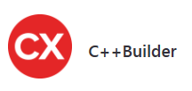Windows XP no longer supported.
Microsoft is no longer supporting Windows XP, so we are dropping support as well. 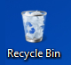
Additions to Sapera LT 8.10
- Sapera Explorer
- Redesigned image viewer
- Multisprectal Buffers
- Image Filters
- Side-by-side display of CLHS devices
- Access to Metadata
- CamExpert Refresh Mode and Pixel String Formatting Options
Sapera Explorer
Our new Sapera Explorer let's you discover the collection of code examples, demos and other tools included with the Sapera installation, targeting the device type of your choice (cameras and frame grabbers).

Redesigned image viewer
The new version of Sapera includes an upgraded CamExpert with an improved image viewer. It relies heavily on the mouse and keyboard capabilities for interactive zooming and stretching the image, as well as placing and resizing a region of interest (ROI).
| command | result | command | result |
| scroll mouse wheel | zoom in/out (relatively to the pointed pixel) | CTRL and scroll | zoom in/out faster |
| right button down and scroll | stretch over the horizontal X axis | SHIFT, right button down and scroll | stretch over the vertical Y axis |
| CTRL + '+' CTRL + '-' |
zoom in zoom out |
CTRL + '0' | reset zoom factor to 100% |
| double click | create a new ROI or clear the existing ROI |
ALT + arrow key | precisely select a pixel in the viewer |
Note to developers: This new image viewer is included in the SapClassGui library. Look at the CImageExWnd class for Sapera++ and MFC for more details. It is already implemented in several demos.
Multispectral Buffers
Need the precision of color AND the sensitivity of near-infrared (NIR) monochrome? The new Teledyne DALSA Piranha4 Color's quadlinear CMOS sensor brings the best of both worlds by providing three native colors (Red, Green, and Blue) as well as a separate monochrome channel with minimum spatial separation for the maximum in color accuracy.
Note to developers: Sapera LT adds support in the SapBuffer class for these new multispectral RGB-Mono formats.
Image Filters
Teledyne Xtium CLHS frame grabbers have introduced new hardware-based image filters for on-board image processing. This image filter kernel is customizable so that users can choose any type of kernel to apply, whether it's a kernel for sharpening, edge detection, or smoothing.
Note to developers: Sapera LT has added support for this image filter in SapAcquisition and SapClassGui classes, the Grab Demo and CamExpert.
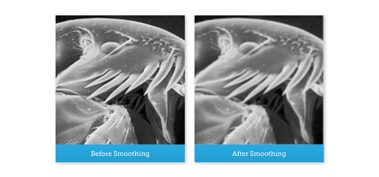Side-by-side display of CLHS devices

Board and Camera are displayed "side by side" in CamExpert
When using a CLHS setup and a camera is connected onto the board, both devices are displayed in the Parameters window of CamExpert, allowing you to change both configurations in the same instance of the program.
The camera detection happens automatically upon connection to and disconnection from the frame-grabber.
Metadata is one click away

Metadata tab in CamExpert
When feature-based devices use metadata chunks, CamExpert has a new "Metadata" tab to access the image metadata.
For line-scan devices, the image viewer has an interactive navigation bar on the left: click to select a line index whose metadata you want to extract and see.
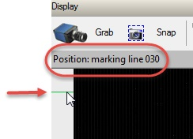
Note for developers: A new class has been added to the Sapera library, SapMetadata, to manage GigE-Vision camera metadata.
CamExpert offers new display options
CamExpert can now refresh feature values automatically
For read-only feature values, such as the temperature, CamExpert can now automatically refresh these values if they change.
Of course, you can still choose to manually refresh values by right-clicking on the feature value and using the pop-up menu Refresh command.
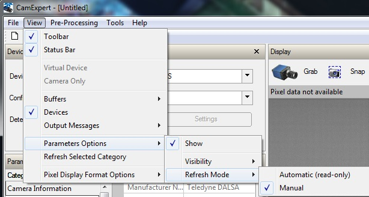Choose your preferred pixel display format
CamExpert can now display pixel values in decimal and hexadecimal formats. Also available from the View menu.
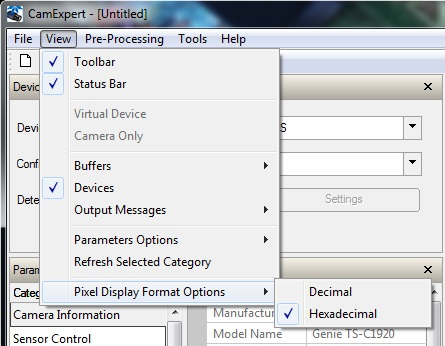Additions to Sapera LT 8.0
The same Sapera. Free of charge!
Here's a look at some of the features in Sapera LT 8.0.
Sapera Network Imaging package now included with Sapera
The Sapera Network Imaging package is now included with the Sapera installation. This package provides support for all GigE Vision compliant cameras and devices.
Upgrade without reboot
We've simplified the installation process: If you're running Sapera LT 7.30 or higher, the Sapera LT 8.0 installer provide you with the option to upgrade your distribution. No need to uninstall first!
Removed product key
Sapera no longer requires a product key.